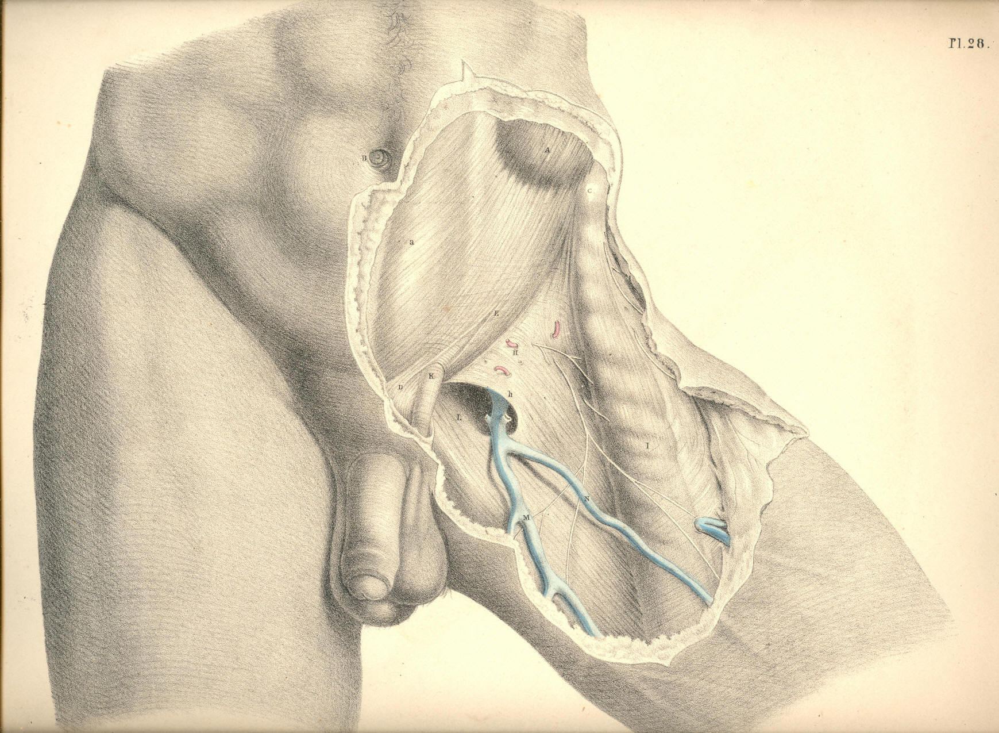
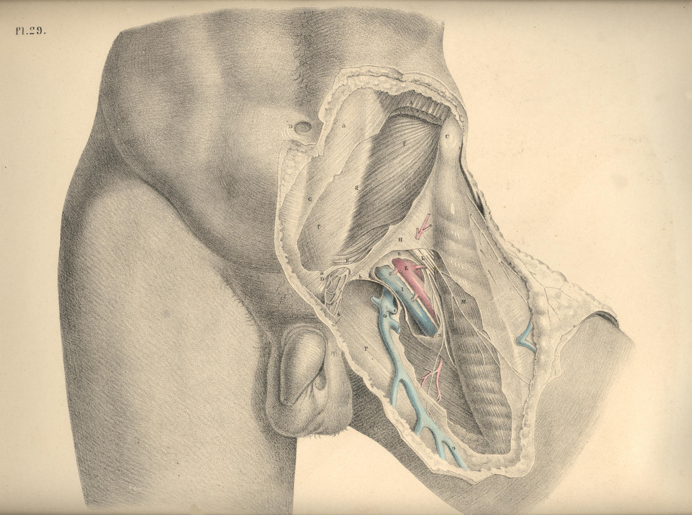

SURGICAL ANATOMY by JOSEPH MACLISE
COMMENTARY ON PLATES 28 & 29.
THE SURGICAL DISSECTION OF THE FIRST, SECOND, THIRD, AND FOURTH
LAYERS OF THE INGUINAL REGION IN CONNEXION WITH THOSE OF THE
THIGH.
The common integument or first layer
of the inguino-femoral region being
removed, we expose the superficial fascia constituting the second layer.
The connexion of this fascia with Poupart's ligament along the line C D,
together with the facts, that corresponding with this line the fascia is
devoid of adipous substance, and the integument thin and delicate,
whilst above over the abdomen, and below over the upper part of the
thigh, the meshes of the fascia are generally loaded with a considerable
quantity of adipous tissue, will account for the permanency and
distinctness of the fold of the groin. As this fold corresponds with
Poupart's ligament, it is taken as a guide to distinguish between the
inguinal and femoral forms of herniae.
The general relations of the superficial fascia are well described by
Camper in the following sentence: "Musculus obliquus igitur externus
abdominis, qua parte carneus est, membrana quadam propria, quali omnes
musculi, tegitur, quae sensim in aponeurosin mutata, ac cum tendineis
hujus musculi partibus unita, externe ac anteriore parte abdomen tegit;
finem vero nullibi habere perspicuum est, ad pubem enim miscet cellulosa
membrana, cum ligamento penis in viris ac clitoridis in feminis,
involucrum dat musculo cremasteri, ac aponeuroseos speciem musculis
anterioribus femoris, qua glandulae inguinales, ac cruris vasa majora
obteguntur." (Icones Herniarum.)
Owing to the varied thickness of the adipous tissue contained in the
superficial fascia at several regions of the same body, and at some
corresponding regions of different individuals, it will be evident that
the depth of the incision required to divide it, so as to expose
subjacent structures, must vary accordingly. Where the superficial
fascia, after encasing the cord, descends into the scrotum, it is also
devoid of the fatty tissu.
By the removal of the superficial fascia and glands we expose the
aponeurosis of the external oblique muscle, A a, Pl. 28, (constituting
the third layer of the groin,)
and also the fascia of the thigh, H L.
These strong fibrous structures will be observed to hold still in situ
the other parts, and to be the chief agents in determining the normal
form of this region.
The inguino-femoral region, as being the seat of hernial protrusions,
may in this stage of the dissection be conveniently described as a space
formed of two triangles--the one inguinal, the other femoral, placed
base to base. The inguinal triangle may be drawn between the points, B
C D, Pl. 28, while the femoral triangle may be marked by the points, C D
N. The conjoined bases of these triangles correspond to Poupart's
ligament along the line, C D. The inguinal varieties of herniae occur
immediately above the line, C D, while the femoral varieties of herniae
take place below this line. The herniae of the inguinal triangle are,
therefore, distinguishable from those of the femoral triangle by a
reference to the line, C D, or Poupart's ligament.
The aponeurosis of the external oblique muscle occupies the whole of
that space which I have marked as the inguinal triangle, B C D, Pl. 28.
The fleshy fibres of the muscle, A, after forming the lateral wall of
the abdomen, descend to the level of C, the iliac spinous process, and
here give off the inguinal part of their broad tendon, a. The fibres of
this part of the tendon descend obliquely downwards and forwards to
become inserted at the median line of the abdomen into the linea alba, B
D, as also into the symphysis and crista of the os pubis. The lower band
of the fibres of this tendinous sheath--viz., that which is stretched
between C, the iliac spine, and D, the crista pubis, is named Poupart's
ligament; and this is strongly connected with H, the iliac portion of
the fascia lata of the thigh.
Poupart's ligament is not stretched tensely in a right line, like the
string of a bow, between the points, C and D. With regard to these
points it is lax, and curves down towards the thigh like the arc of a
circle. The degree of tension which it manifests when the thigh is in
the extended position is chiefly owing to its connexion with the fascia
lata. If in this position of the limb we sever the connexion between the
ligament and fascia, the former becomes relaxed in the same degree as it
does when we flex the thigh upon the abdomen. The utmost degree of
relaxation which can be given to Poupart's ligament is effected by
flexing the thigh towards the abdomen, at the same time that we support
the body forwards. This fact has its practical application in connexion
with the reduction of herniae.
Immediately above the middle of Poupart's ligament, at the point E, Pl.
28, we observe the commencement of a separation taking place among the
fibres of the aponeurosis. These divide into two bands, which, gradually
widening from each other as they proceed inwards, become inserted, the
upper one into the symphysis pubis, the lower into the spine and
pectineal ridge of this bone. The lower band identifies itself with
Poupart's ligament. The interval which is thus formed by the separation
of these fibres assumes the appearance of an acute triangle, the apex of
which is at E, and the base at D. But the outer end of this interval is
rounded off by certain fibres which cross those of the bands at varying
angles. At this place, the aponeurosis, thus constituted of fibres
disposed crossways, is elongated into a canal, forming an envelope for
the cord, K. This elongation is named the "external spermatic fascia,"
and is continued over the cord as far as the testicle. In the female, a
similar canal encloses the round ligament of the uterus. From the
above-mentioned facts, it will appear that the so-called "external
abdominal ring" does not exist as an aperture with defined margins
formed in the tendon of the external oblique muscle. It is only when we
divide the spermatic fascia upon the cord at K, that we form the
external ring, and then it must be regarded as an artificial opening, as
at D, Pl. 29.
The part of the groin where the spermatic fascia is first derived from
the aponeurosis, so as to envelope the cord, varies in several
individuals; and thereupon depends, in great measure, the strength or
weakness of the groin. In some cases, the cord becomes pendulous as far
outwards as the point E, Pl. 28, which corresponds to the internal ring,
thereby offering a direct passage for the hernial protrusion. In other
instances, the two bands of the aponeurosis, known as the "pillars of
the ring," together with the transverse fibres, or "intercolumnar
fascia," firmly embrace and support the cord as far inwards as the point
K, and by the oblique direction thus given to the cord in traversing the
inguinal parietes, these parts are fortified against the occurrence of
hernia. In Pl. 28, the cord, K, will be observed to drop over the lower
band of fibres, ("external pillar of the ring,") and to have D, the
crista pubis, on its inner side. In Pl. 29, the upper band of fibres
("internal pillar of the ring") may be seen proceeding to its insertion
into the symphysis pubis. When a hernial tumour protrudes at the
situation K, it is invested, in the same manner as the cord, by the
spermatic fascia, and holds in respect to the fibrous bands or pillars
the same relations also as this part.
After removing the tendon of the external oblique muscle, A a,
Pl. 28,
together with its spermatic elongation, E, we expose the internal
oblique, F E, Pl. 29, and the cremaster, constituting the fourth
inguinal layer. The fleshy
part of this muscle, F E, occupies a much
greater extent of the inguinal region than does that of the external
oblique. Whilst the fleshy fibres of the latter terminate on a level
with C, the iliac spine, those of the internal oblique are continued
down as far as the external abdominal ring, E D h, and even protrude
through this place in the form of a cremaster. The muscular fibres of
the internal oblique terminate internally at the linea semilunaris, g;
while Poupart's ligament, the spinous process and crest of the ilium,
give origin to them externally. At the linea semilunaris, the tendon of
the internal oblique is described as dividing into two layers, which
passing, one before and the other behind the rectus abdominis, thus
enclose this muscle in a sheath, after which they are inserted into the
linea alba, G. The direction of the fibres of the inguinal portion of
the muscle, F E, is obliquely downwards and forwards, and here they are
firmly overlaid by the aponeurosis of the external oblique.
The cremaster muscle manifests itself as being a part of the internal
oblique, viewing this in its totality. Cloquet (Recherches anatomiques
sur les Hernies de l'Abdomen) first demonstrated the correctness of this
idea.
The oblique and serial arrangement of the muscular fibres of the
internal oblique, F, Pl. 29, is seen to be continued upon the spermatic
cord by the fibres of the cremaster, E e. These fibres, like those of
the lower border of the internal oblique, arise from the middle of
Poupart's ligament, and after descending over the cord as far as the
testicle in the form of a series of inverted loops, e, again ascend to
join the tendon of the internal oblique, by which they become inserted
into the crest and pectineal ridge of the os pubis. The peculiar looping
arrangement exhibited by the cremasteric fibres indicates the fact that
the testicle, during its descent from the loins to the scrotum, carried
with it a muscular covering, at the expense of the internal oblique
muscle. The cremaster, therefore, is to be interpreted as a production
of the internal oblique, just as the spermatic fascia is an elongation
of the external oblique. The hernia, which follows the course of the
spermatic vessels, must therefore necessarily become invested by
cremasteric fibres.
The fascia lata, H, Pl. 28, being strongly connected and continuous with
Poupart's ligament along its inferior border, the boundary line, which
Poupart's ligament is described as drawing between the abdomen and
thigh, must be considered as merely an artificial one.
In the upper region of the thigh the fascia lata is divided into two
parts--viz., H, the iliac part, and L, the pubic. The iliac part, H,
which is external, and occupying a higher plane than the pubic part, is
attached to Poupart's ligament along its whole extent, from C to D, Pl.
28; that is, from the anterior iliac spinous process to the crista
pubis. From this latter point over the upper and inner part of the
thigh, the iliac division of the fascia appears to terminate in an edge
of crescentic shape, h; but
this appearance is only given to it by our
separating the superficial fascia with which it is, in the natural state
of the parts, blended. The pubic part of the fascia, L, Pl. 28, which is
much thinner than the iliac part, covers the pectineus muscle, and is
attached to the crest and pectineal ridge of the os pubis, occupying a
plane, therefore, below the iliac part, and in this way passes outwards
beneath the sheath of the femoral vessels, K I, Pl. 29. These two
divisions of the fascia lata, although separated above, are united and
continuous on the same plane below. An interval is thus formed between
them for the space of about two inches below the inner third of
Poupart's ligament; and this interval is known as the "saphenous
opening," L h, Pl. 28.
Through this opening, the saphena vein, O, Pl.
29, enters the femoral vein, I.
From the foregoing remarks it will appear that no such aperture as that
which is named "saphenous," and described as being shaped in the manner
of L h, Pl. 28, with its
"upper and lower cornua," and its "falciform
process," or edge, h, exists
naturally. Nor need we be surprised,
therefore, that so accurate an observer as Soemmering (de Corporis
Humani Fabrica) appears to have taken no notice of it.
Whilst the pubic part of the fascia lata passes beneath the sheath of
the femoral vessels, K I, Pl. 29, the iliac part, H h, blends by its
falciform margin with the superficial fascia, and also with N n, the
sheath of the femoral vessels. The so-called saphenous opening,
therefore, is naturally masked by the superficial fascia; and this
membrane being here perforated for the passage of the saphena vein, and
its tributary branches, as also the efferent vessels of the lymphatic
glands, is termed "cribriform."
The femoral vessels, K I, contained in their proper sheath, lie
immediately beneath the iliac part of the fascia lata, in that angle
which is expressed by Poupart's ligament, along the line C D above; by
the sartorius muscle in the line C M externally; and by a line drawn
from D to N, corresponding to the pectineus muscle internally. The
femoral vein, I, lies close to the outer margin of the saphenous
opening. The artery, K, lies close to the outer side of the vein; and
external to the artery is seen, L, the anterior crural nerve, sending
off its superficial and deep branches.
When a femoral hernia protrudes at the saphenous space L h, Pl. 28, the
dense falciform process, h,
embraces its outer side, while the pubic
portion of the fascia, L, lies beneath it. The cord, K, is placed on the
inner side of the hernia; the cribriform fascia covers it; and the upper
end of the saphena vein, M, passes beneath its lower border. The upper
cornu, h, Pl. 29, of the
falciform process would seem, by its situation,
to be one of the parts which constrict a crural hernia. An inguinal
hernia, which descends the cord, K, Pl. 28, provided it passes no
further than the point indicated at K, and a crural hernia turning
upwards from the saphenous interval over the cord at K, are very likely
to present some difficulty in distinctive diagnosis.
DESCRIPTION OF THE FIGURES OF PLATES 28 & 29.
PLATE 28.
A. The fleshy part of the external oblique muscle; a, its tendon
covering the rectus muscle.
B. The umbilicus.
C. The anterior superior spinous process of the ilium.
D. The spinous process of the os pubis.
E. The point where in this instance the fibres of the aponeurotic tendon
of the external oblique muscle begin to separate and form
the pillars
of the external ring.
F G. See Plate 29.
H. The fascia lata--its iliac portion. The letter indicates the
situation of the common femoral artery; h, the falciform
edge of the
saphenous opening.
I. The sartorius muscle covered by a process of the fascia lata.
K. The spermatic fascia derived from the external oblique tendon.
L. The pubic part of the fascia lata forming the inner and posterior
boundary of the saphenous opening.
M. The saphenous vein.
N. A tributary vein coming from the fore part of the thigh.

Plate 28
PLATE 29.
A. The muscular part of the external oblique; a, its tendon.
B. The umbilicus.
C. The anterior superior iliac spine.
D. The spine of the os pubis.
E. The cremasteric fibres, within the external ring, surrounding the
cord; e, the
cremasteric fibres looping over the cord
outside the ring.
F. The muscular part of the internal oblique giving off, E, the
cremaster; its tendon sheathing the rectus muscle.
G. The linea alba; f, g, the
linea semilunaris.
H. The iliac part of the fascia lata; h,
the upper cornu of its
falciform process.
I. The femoral vein.
K. The femoral artery.
L. The anterior crural nerve.
M. The sartorius muscle.
N. The sheath of the femoral vessels; n,
its upper part.
O. The saphena vein.
P. The pubic part of the fascia lata.

Plate 29
COMMENTARY ON PLATES 30
& 31